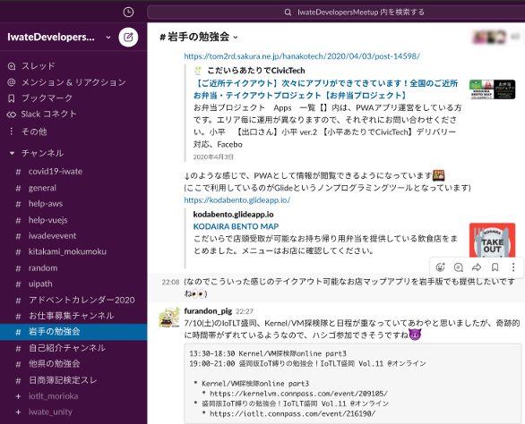
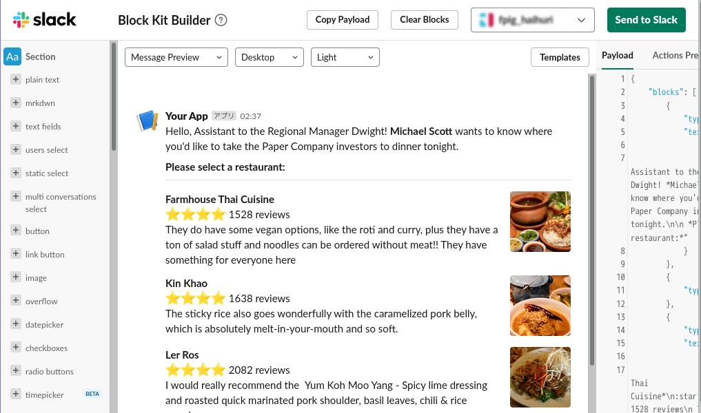
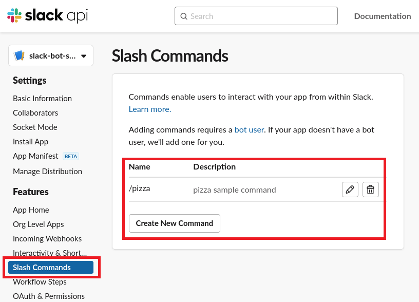
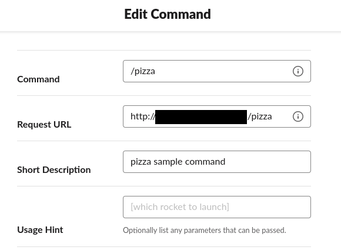
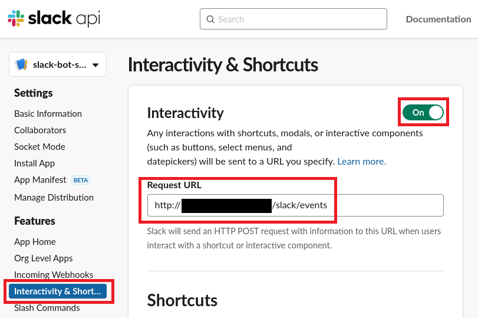
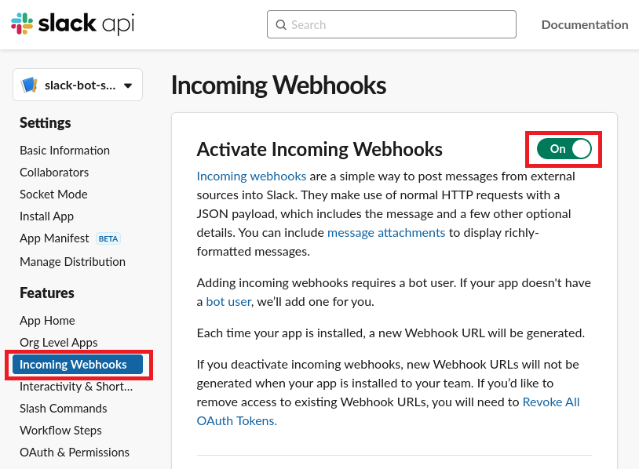

## <div style="border: thin solid; border-radius: 8px; padding: 8px; background: white;"><font color="midnightblue" style="text-transform:none;">Slackの<br>Block Kit Builderを<br>試してみる</font></div> [ゆるWeb勉強会@札幌 OnLine #13](https://mild-web-sap.connpass.com/event/214866/)(2021/06/28) <!-- <img src="https://pbs.twimg.com/profile_images/2577120213/74t8gdwg96vj93vg46a4_200x200.png" width="40" height="40"> --> [@furandon_pig](https://twitter.com/furandon_pig)
### 自己紹介 <img src="https://pbs.twimg.com/profile_images/2577120213/74t8gdwg96vj93vg46a4_200x200.png" width="80" height="80"> [@furandon_pig](https://twitter.com/furandon_pig) <p> 小さなWebアプリを細々と作っています。 * [ぬりえアプリ](https://furandon-pig.github.io/nurie/) * [Brocco.graph](https://furandon-pig.github.io/fpig_sample/hobby/brocco_graph/) * [ジャンプ作家風 巻末コメントアプリ](https://furandon-pig.github.io/jump_comment_app/) * [セリフ書き込みアプリ](https://furandon-pig.github.io/mmr-kitsune-san/) </p>
### 今日のお話 SlackのBlock Kit Builderについて話そうと思います😃
### Slack 
### Slack Bot * ビルド、テストといった、定型的な処理の実行 * 特定のキーワードに反応して、決められた処理を実行する * 基本的にはその都度実行して完了するような処理に向いている
### Botの実行 特定のキーワードやパターンにマッチさせてBotから処理を実行する。 ``` @build_bot ブランチ fix_any_bug をビルドして。 ```
だがしかし、その都度キーワードを入力するのはちょっと面倒だったりもしますぞ...🤔
### Slack Block Kit Builder * [Block Kit Builder](https://app.slack.com/block-kit-builder/) * チェックボタンやラジオボタン、ドロップダウンリストといったUI作成を容易にするツール * UIはJSONで表現され、incoming Webhook経由でSlackに送信するとチャンネルにUIが表示される

### UIのJSON定義例 ``` { "blocks": [ { "type": "section", "text": { "type": "mrkdwn", "text": "This is a section block with a button." }, "accessory": { "type": "button", "text": { "type": "plain_text", "text": "Click Me", "emoji": true }, "value": "click_me_123", "action_id": "button-action" } } ] } ```
### Slack BotとUIを組み合わせる * incoming WebhookとUI(JSON)を組み合わせる * SlackからはInteractive Componentsでリクエストが飛んでくる * これにより、インタラクティブなSlack Botを作成できる
### 必要な設定 * Slackの[Your Apps](https://api.slack.com/apps)から設定する * 今回はスラッシュコマンドを起点としてBotとやりとりするサンプルです
#### スラッシュコマンドの設定(その1) 
#### スラッシュコマンドの設定(その2) 
#### Interactivity & Shortcutsの設定 
#### Incoming Webhooksの設定 
### これでSlack側での準備はOK * Request URLで設定したエンドポイントにSlackからリクエストが飛んでくる * 今回はRuby+Sinatraでサンプルを作成 * 今回のサンプル * [ドミノピザのメニュー](https://www.dominos.jp/menu) * ピザのメニュー選択Bot(仮)
### コードサンプル
### 動作デモ
### まとめ * SlackのBlock Kit Builderを試してみました。 * UIはJSONで記述する。 * Incoming WebhooksとIncoming Componentsを設定する * Slackからリクエストが飛んでくるので、UI(JSON)をWebhookで返す * 今回はERBでJSONを生成したけどイマイチ面倒... * Object.to_jsonする形の方が良いかも🥺
## ご清聴ありがとうございました😃